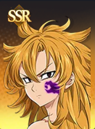

← Back to Characters
Derieri

SSR
Description
A Demon of <The Ten Commandments>, an elite unit of the Demon King. She is bestowed with the Commandment of 「Purity」 and uses the magical power of "Combo Star." She often speaks in short, clipped phrases, so her companion Monspeet frequently acts as her unofficial interpreter.
Weapon Types:
GauntletsAxeGreatsword
🚧 Skills, Potentials, and Costumes data will be added soon.
Check back later for updates